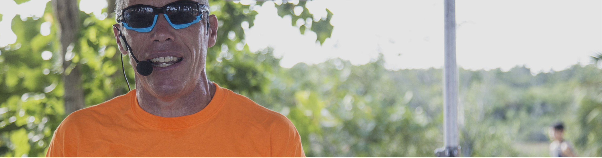

Toronto Waterfront Marathon
Since 1998 “the voice of the Toronto Waterfront Marathon,” one of Canada’s only IAAF Gold Label marathon events.

Header image placeholderThe Mackatak announcing team
Informed, energetic announcing that connects athletes, spectators and sponsors—from a first start line to the world stage.
Ask about your eventMore than commentary
Our team combines an athlete’s instincts with decades of journalism, production and live-event experience.
We know when a crowd needs context, when an athlete deserves the spotlight and when the finish line simply needs room to breathe. Every assignment is matched with voices that understand the sport, the audience and the shape of the day.
On the mic
The right voice can settle a start line, explain the race unfolding, lift a crowd and make the final finisher feel like the only athlete in the world.
Selected experience
Mackatak announcers bring experience from events across Canada, throughout North America and internationally.
Since 1998 “the voice of the Toronto Waterfront Marathon,” one of Canada’s only IAAF Gold Label marathon events.
Race walking, open-water swimming, triathlon and marathon announcing.
International race experience including Lanzarote and Canada.
Positive, athlete-first energy for young racers and their families.
Clear, informed commentary for participants and spectators.
Deep sport knowledge delivered with warmth and momentum.
Additional experience includes Around the Bay, Run Barbados, Meagan’s Walk, the Toronto Pan American Cup and the UWC Bahamas Triathlon.
“
“A memorable and enjoyable experience for both our participants and our spectators.”
— Lianne Warne & Jen Stretch, co-founders and race directors, Tri-FUN Kids’ Triathlons
Bookings & availability
Tell the Mackatak team about your event, audience, location and date.